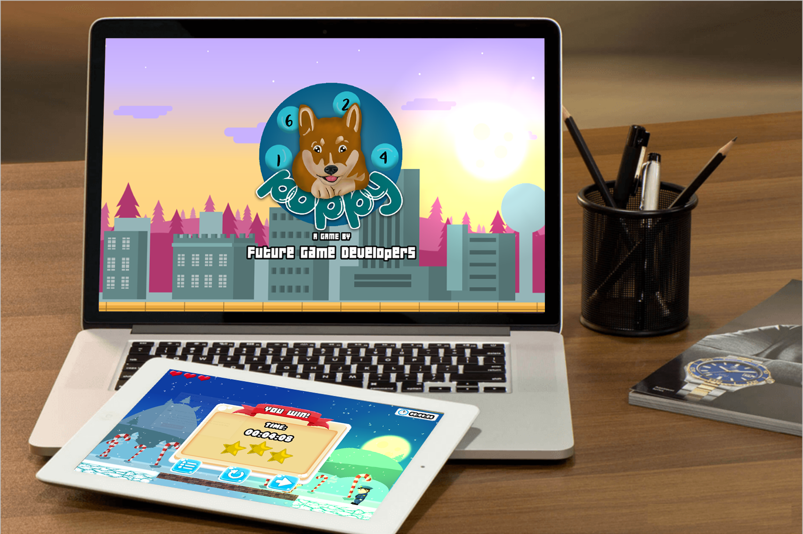
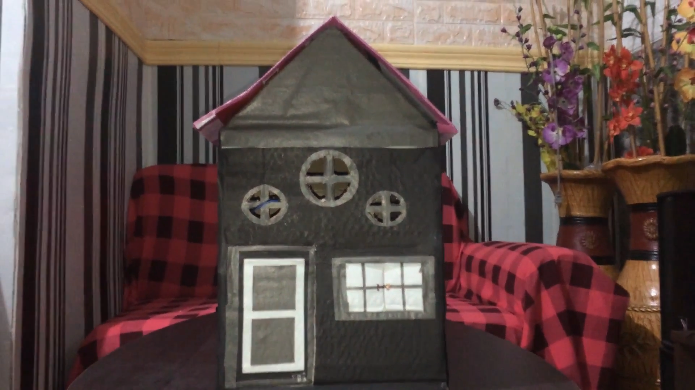

JEFFERSON SALVADOR
Artist and Developer
POPPY GAME
For this game project, the software we used is Godot. Godot is a free and open-source game engine released under the MIT license. It was initially developed for several companies in Latin America before its public release. The development environment runs on Windows, macOS, and Linux. It can create games for PCs, mobile devices and the Web platform. Godot games are created either in C++, C#, languages with GDNative bindings such as Rust, Nim, D, or by using its own scripting language, GDScript, a high level, dynamically typed programming language very similar to Python.
The graphics engine uses OpenGL ES 3.0 for all supported platforms; otherwise, OpenGL ES 2.0 is used. Future support for Vulkan is also planned. It supports normal mapping, specularity, dynamic shadows using shadow maps and full-screen post-processing effects like FXAA, bloom, DOF, HDR, and gamma correction. A simplified shader language similar to GLSL is also incorporated; shaders can be used for materials and post-processing. Alternatively, they can be created by manipulating nodes in a visual editor. There is also a separate 2D graphics engine, which can operate independently of the 3D one. Examples of 2D engine features include lights, shadows, shaders, tile sets, parallax scrolling, polygons, animations, physics and particles. It is also possible to mix 2D and 3D using a 'viewport node'.
Godot contains an animation system with a GUI for editing skeletal animation, blending, animation trees, morphing and realtime cutscenes. Almost any variable defined or created-on-a-game entity can be animated. The engine uses Bullet for 3D physics simulation. Also, we used Adobe Photoshop CS6 , Adobe Photoshop is a raster graphics editor developed and published by Adobe Inc. for Windows and macOS. We use this for our animation and graphics in the game.
TASK VIEWER APP
Task Viewer App is a task managing mobile application that can be installed in any operating system like Android and IOS. It was built using React Native that was built by Facebook.
This Task Viewer Application comes with simple but usable features such as adding tasks and deleting tasks. To add task, the user only needs to click the text bar, type the task he/she wants to add, and click 'Add Task' button. To delete the added task, the user only needs to click the 'bin' icon at the left of every task, or click the task itself, and it will be deleted. That is how simple this application is. There's no login or anything, just the main function a normal person want to see in a typical task viewer.
Additional feature we included is the darkmode theme toggle just to go with what's in nowadays. Also, darkmode theme can help those who can't read clear or see clear in a particular setting like daymode or darkmode.
We also make sure that the colors we implemented and added gives calmness and be user-friendly, which is our main goal for this app.
Making this app is quite tricky yet enjoyful because it uses the amplified javascript framework such as React Native and React JS. We also used Material Icons for the icons here that made this an eye pleasing app.
HOME SECURITY SYSTEM
Home Security Alarm Systems are very important in present day society, where crime is increasing. With the technological advancements we have achieved in the recent years, a homeowner doesn’t have to worry about home security while getting off his/her home. Home Security Systems are an important feature of modern residential and office setups. Home security systems must be affordable, reliable, and effective. This is a Home Security System using Arduino, which will trigger alarm when a window is opened, or movement detected in the room when the system is activated. The most basic definition of any security system is found in its name. It is literally a means or method by which something is secured through a system of interworking components and devices. In this instance, it is about home security systems, which are networks of integrated electronic devices working together with a central control panel to protect against burglars and other potential home intruders.
This project is designed using normally closed reed switches connected to windows and additional passive infrared (PIR) motion sensors to detect movement of a burglar or an unwanted intruder in your home. The security system can send text message to the number of the user.This system is a basic motion activated alarm. It is built around an Arduino Microcontroller. It is connected to a PIR motion sensor, a buzzer, a resistor, and a pair of external terminals. The whole system is battery powered so that it is easily portable. Once you have the code, you can connect all the external parts. The easiest way to do this is with a breadboard. This will let you make temporary connections to test everything out.
Our project is a basic motion-sensing alarm that detects when someone enters the area. When an intruder is detected, it activates a siren which is to inform the user in case movement was detected or trigger the buzzer in case window was opened. Our body generates heat energy in the form of infrared which is invisible to human eyes. But it can be detected by electronic sensor. The aim of this project is to implement a simple and affordable, but efficient home security alarm system. The project is designed for detecting intruders and informing the owner by making a text message.